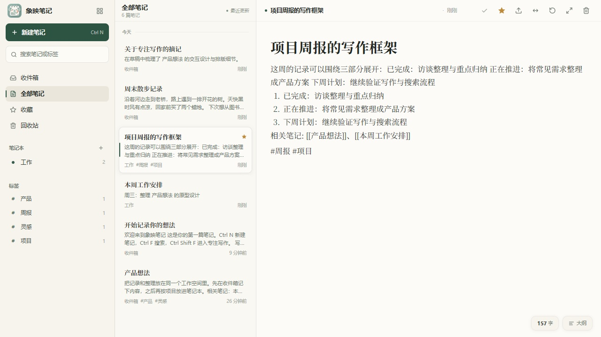
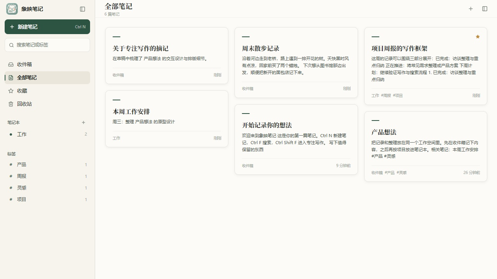
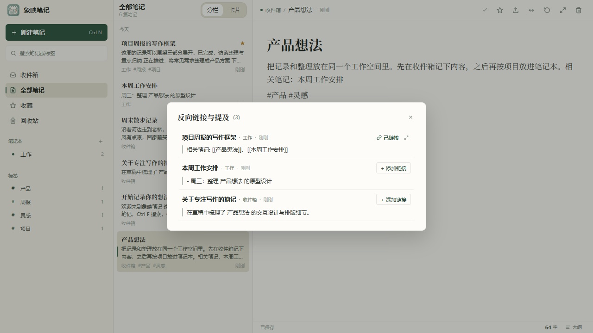

让写下的每一个字，
都在本地踏实落脚。
基于 Go + MyGo 原生 GPU 自绘引擎 打造的现代化桌面 Markdown 笔记。告别臃肿的浏览器内核与远程账号锁定，毫秒级瞬时启动，极低内存驻留，让记录回归沉浸与纯粹。

宣纸温润质朴，
字句自然成流
灵感不应被刺眼的纯白或塑料感的 AI 渐变打断。象映笔记选用温润的宣纸暖白（#F4F1E9）底色与松柏深绿（#2D5342）点缀，衬线标题搭配经典排版，提供如同纸墨相融的沉浸书写质感。
-
1标题与正文浑然一体
无边框大标题随文档自然滚动，首段智能提炼为标题，杜绝双重输入负担。
-
2标签与大纲即时联动
正文中随手书写的 #工作 #读书 标签自动提取为左栏过滤器；点击大纲标题带平滑居中动画精准跳转。
-
3输入防抖与细粒度持久化
连续输入时调度 450ms 静止窗口防抖保存，切出或关窗即刻刷盘，毫秒级响应且保障零数据丢失。
平铺多篇笔记，
在书桌上串联灵感
列表负责严谨的线性梳理，卡片网格则负责灵感的漫步与重温。一键切入瀑布流卡片视图，所有笔记的标题、多行摘要、标签与更新时间并排铺陈，找回被遗忘在碎片里的火花。
-
1原生 Masonry 瀑布流自绘
纯 Go 虚拟滚动与高度预估算法，万篇笔记在卡片流中翻滚依然如丝绸般流畅。
-
2点击卡片全宽专注编辑
点击任意卡片瞬间无缝过渡为全宽写作视图，收起冗余列表，专注当前的这一件事。

键入 [[双括号]]，
让记忆彼此逢迎
知识不应是一座座孤岛。在正文任意位置输入 [[笔记标题]] 即可建立双向超链接。不仅自动收集反向引用，还能智能发掘全库中尚未链接的“同名提及”。
-
1反向链接弹窗 · 随手呼出
点击编辑器顶栏反向链接图标（或按 Esc 收起），清晰列出所有引用当前笔记的相关文档与上下文切片。
-
2未链接提及 · 一键升级
智能识别其他笔记中提到当前标题但未加链接的段落，点击「+ 添加链接」直接升级为双向关联。
-
3点击跳转 · 丝滑穿梭
在弹窗中点击关联笔记名称，瞬间跳转定位对应笔记，在自己的知识网络中自由漫游。

单实例窗口唤醒
已在后台运行时，再次点击图标自动还原并聚焦已有窗口，绝不重复生成多余进程。
临界阻尼平滑滚轮
专门调校的 280ms 弹簧阻尼动画，无论使用鼠标滚轮还是触控板，滚动体验皆温和细腻。
双轨中文全文搜索
长短词混合自适应索引，即便搜索单个汉字或生僻标点符号，也能瞬间从海量笔记中定位。
数据留在本地，
所有权完全归你
不需注册账号，没有远程服务器审查，断网环境下依然 100% 具备全量功能。我们拒绝把界面塞满花哨无用的管理按钮，而是将强大的数据导出与备份做成了随手可及的彩蛋入口。
-
★连击 5 次图标 · 唤出专属功能弹窗
连续点击左上角「象映笔记」图标 5 次，随时调出完整的数据导出与备份面板。
-
1全部笔记导出为 Markdown ZIP
自动按笔记本目录归档所有有效笔记，导出为完全开放的标准 Markdown 压缩包，方便随时迁移到任何工具。
-
2单篇笔记导出 (.md)
随时将当前正在阅读或编辑的笔记提取为单个干净独立的 Markdown 文档。
-
3SQLite 原生热快照备份
基于 SQLite VACUUM INTO 原子技术生成单一、合并且紧凑的 .sqlite 备份文件，无需退出应用也能完成安全备份。
保持日常界面不留一丝冗余干扰。只要在左上角应用图标轻轻连击五次，无论何时何地，你的所有数据都能以最开放的标准格式安全带走。
下载象映笔记，
开启安静纯粹的记录时光
全平台已提供 GitHub Actions 自动化编译验证的便携版与原生安装包，无需复杂环境配置，解压即用。
Windows 平台
支持 Windows 10 及以上 · x64 架构提供向导式安装程序（按用户目录安装，无需管理员权限，支持创建开始菜单与桌面快捷方式）及解压即用的免安装便携版。
macOS 平台
支持 macOS 11 及以上 · Apple Silicon (M1/M2/M3/M4)提供拖拽安装的 DMG 镜像包以及便携式应用压缩包，已注入应用图标与原生配置，配合高分辨率 Retina 屏幕自绘渲染。